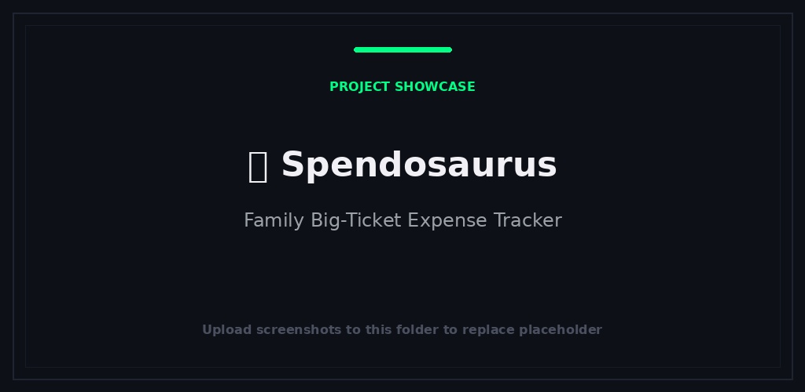
日常工具
Spendosaurus
规划家庭的大额开支，从初次估算到最后一期付款。
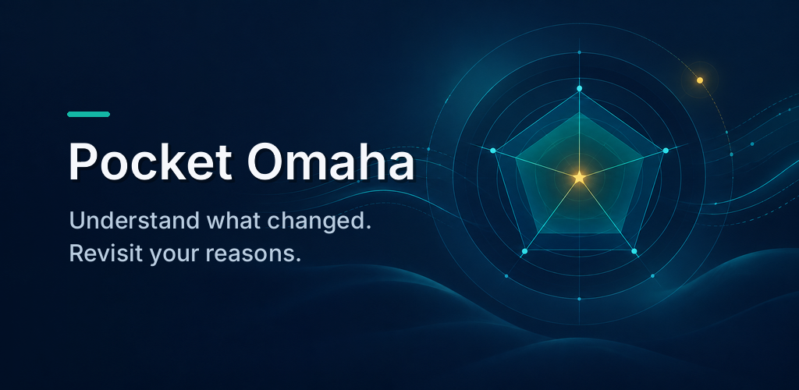
Pocket Omaha 帮助长期投资者了解所关注公司发生了什么变化，并重新审视每个想法背后的理由。它既有面向手机的网页应用，也有原生 Android 应用。
从一个关注列表开始，用 Review 查看哪些公司需要你关注，再打开 Research 查看证据。写下你为什么关注一家公司、哪些前提必须保持成立、什么情况会让你重新考虑，然后记录这些理由是否仍然成立。
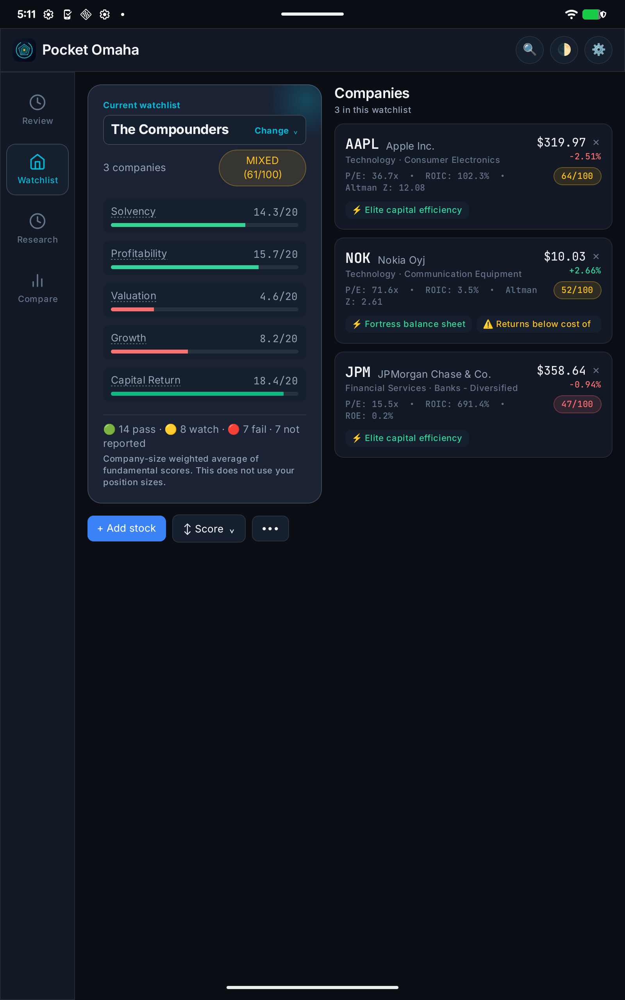
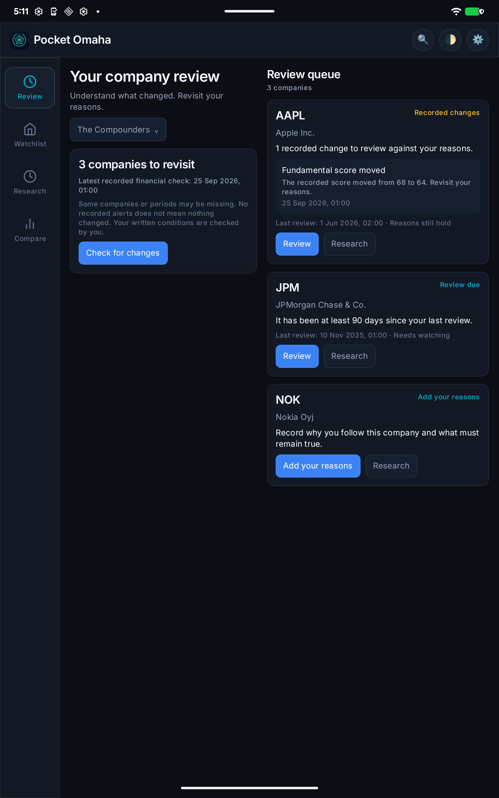
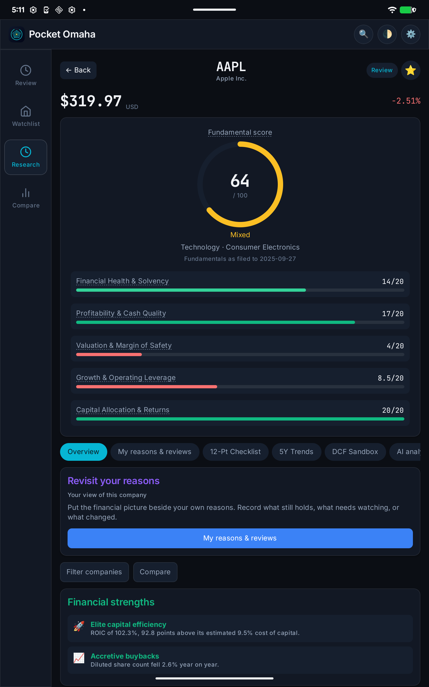
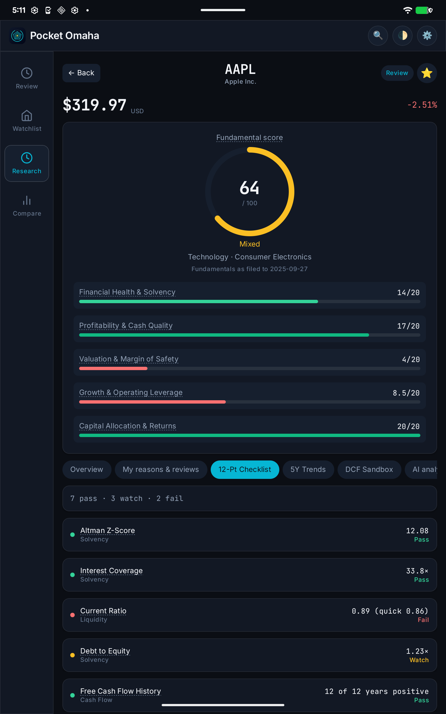
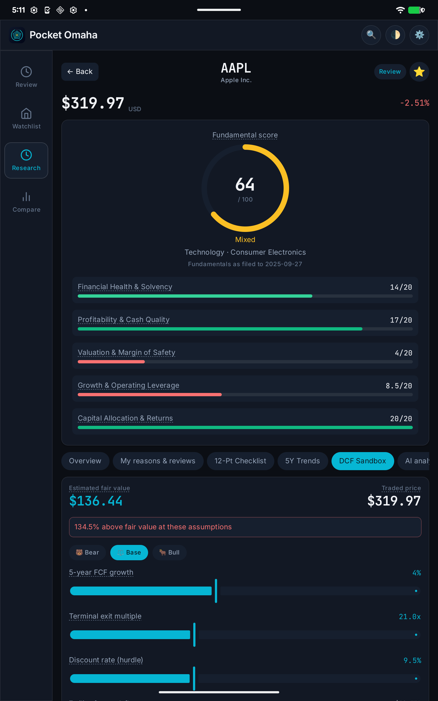
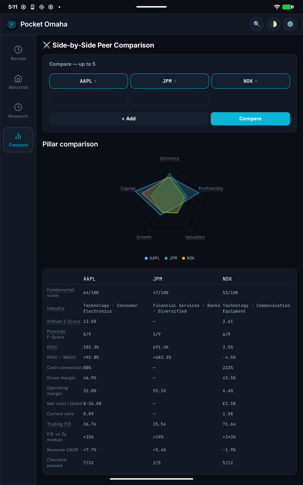
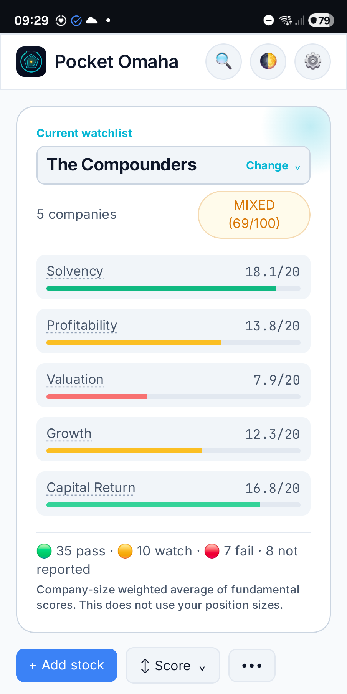
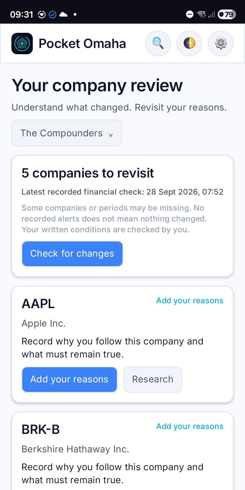
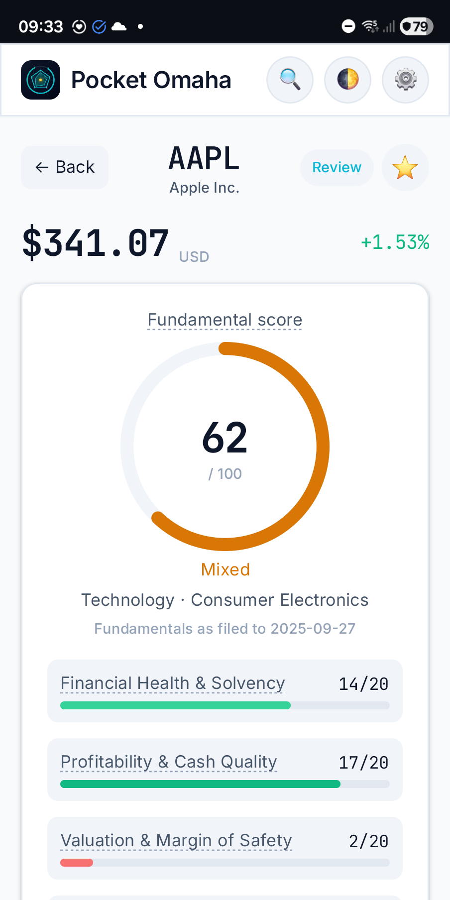
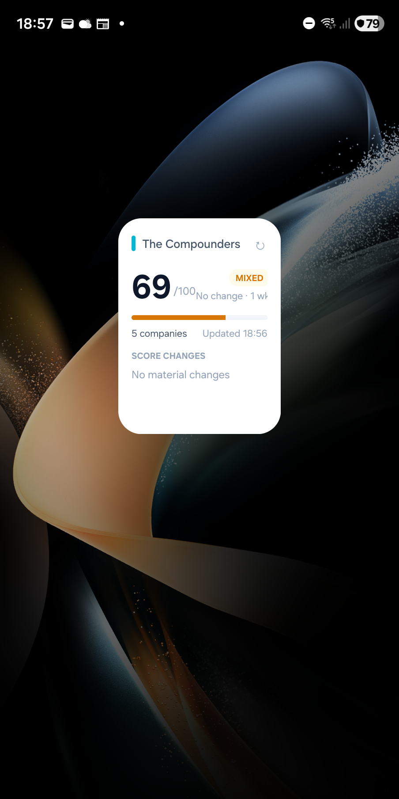

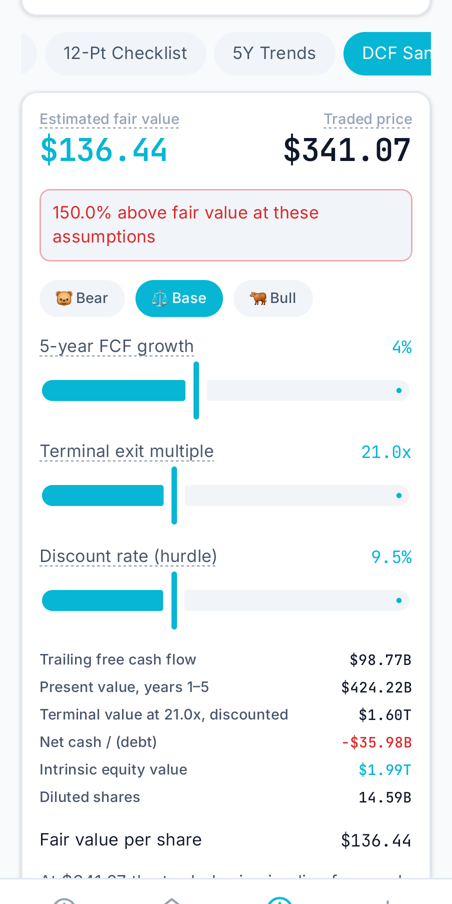

免费的市场数据源常常缺少字段。Pocket Omaha 不会用看似合理的默认值填补空缺，而是把缺失值显示为未披露，并将其排除在评分之外。测量覆盖率低于 60% 时根本不生成评分，每张评分卡都会注明所依据的财年。
财务报表来自 SEC EDGAR，数字与申报时一致；Yahoo Finance 作为后备来源并提供报价。无需 API 密钥，也没有持续费用。
两个版本共用同一个评分引擎，因此同一家公司在任一版本中都会得到相同的评分、检查清单和估值。网页应用运行在自托管服务器上，仅限邀请访问，并支持推送通知。Android 应用把所有数据保存在手机上，无需账号，还提供可绑定所选关注列表的主屏幕小组件。在平板上，它会改用侧边导航栏，关注列表和复盘队列也会多出第二个窗格。
在 Android 上，只有使用 AI 分析时才需要 Google 登录。AI 分析按点数计费：免费赠送五点，更多可购买。Android 应用目前是候选发布版本，即将登陆 Google Play。
Pocket Omaha 是研究与复盘工具。其评分总结的是历史披露的基本面数据；它不预测收益，也不提供个性化投资建议。